data <- read.csv("C:/Users/elife/OneDrive/Masaüstü/EMU430 - Data Analytics/Football teams.csv")Data
# The data was already preprocessed and didn't have NA values.
# So, we didn't have to do any other preprocessing.
library(corrplot)corrplot 0.92 loadedlibrary(tidyverse)── Attaching core tidyverse packages ──────────────────────── tidyverse 2.0.0 ──
✔ dplyr 1.1.3 ✔ readr 2.1.4
✔ forcats 1.0.0 ✔ stringr 1.5.0
✔ ggplot2 3.4.4 ✔ tibble 3.2.1
✔ lubridate 1.9.3 ✔ tidyr 1.3.0
✔ purrr 1.0.2 ── Conflicts ────────────────────────────────────────── tidyverse_conflicts() ──
✖ dplyr::filter() masks stats::filter()
✖ dplyr::lag() masks stats::lag()
ℹ Use the conflicted package (<http://conflicted.r-lib.org/>) to force all conflicts to become errorslibrary(dplyr)
library(nlme)
Attaching package: 'nlme'
The following object is masked from 'package:dplyr':
collapselibrary(lattice)
library(ggplot2)
library(plotrix)
# Summarize the data
table(data$Tournament)
Bundesliga LaLiga Ligue 1 Premier League Serie A
18 20 20 20 20 summary(data) Team Tournament Goals Shots.pg
Length:98 Length:98 Min. :20.00 Min. : 7.10
Class :character Class :character 1st Qu.:40.25 1st Qu.:10.32
Mode :character Mode :character Median :50.00 Median :11.45
Mean :52.18 Mean :11.85
3rd Qu.:61.75 3rd Qu.:13.35
Max. :99.00 Max. :17.10
yellow_cards red_cards Possession. Pass.
Min. : 40.0 Min. : 0.000 Min. :38.50 Min. :66.50
1st Qu.: 60.0 1st Qu.: 2.000 1st Qu.:46.23 1st Qu.:78.03
Median : 67.5 Median : 3.000 Median :49.75 Median :80.80
Mean : 69.7 Mean : 3.337 Mean :50.00 Mean :80.44
3rd Qu.: 80.0 3rd Qu.: 4.750 3rd Qu.:52.85 3rd Qu.:83.45
Max. :117.0 Max. :10.000 Max. :62.40 Max. :89.70
AerialsWon Rating
Min. : 9.50 Min. :6.410
1st Qu.:14.03 1st Qu.:6.540
Median :16.10 Median :6.630
Mean :16.01 Mean :6.646
3rd Qu.:17.85 3rd Qu.:6.730
Max. :26.80 Max. :7.010 colnames(data) [1] "Team" "Tournament" "Goals" "Shots.pg" "yellow_cards"
[6] "red_cards" "Possession." "Pass." "AerialsWon" "Rating" head(data) Team Tournament Goals Shots.pg yellow_cards red_cards
1 Manchester City Premier League 83 15.8 46 2
2 Bayern Munich Bundesliga 99 17.1 44 3
3 Paris Saint-Germain Ligue 1 86 15.0 73 7
4 Barcelona LaLiga 85 15.3 68 2
5 Real Madrid LaLiga 67 14.4 57 2
6 Manchester United Premier League 73 13.8 64 1
Possession. Pass. AerialsWon Rating
1 60.8 89.4 12.8 7.01
2 58.1 85.5 12.9 6.95
3 60.1 89.5 9.5 6.88
4 62.4 89.7 10.6 6.87
5 57.7 87.7 11.8 6.86
6 54.5 84.8 14.5 6.85data <- as.data.frame(data)
# In order to do the correlation, we filter the data into only numeric columns.
data_num <- select_if(data, is.numeric)# Correlation
corr <- cor(data_num)
# Plot
corrplot(corr,tl.col = 'black') # color of the text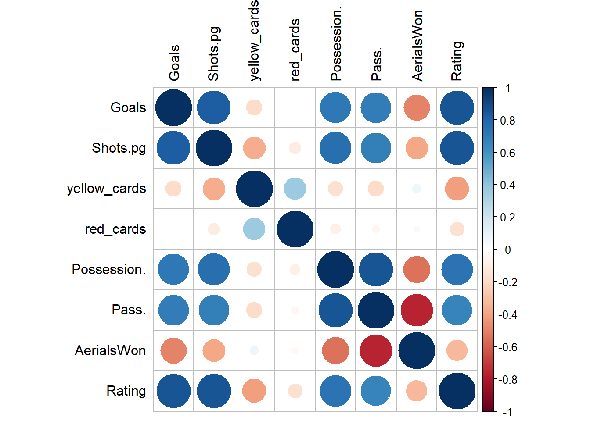
colnames(data) [1] "Team" "Tournament" "Goals" "Shots.pg" "yellow_cards"
[6] "red_cards" "Possession." "Pass." "AerialsWon" "Rating" #colnames(data)[4] <- c("Shots.pg")# Rating boxplot
p <- data %>% mutate(Tournament = reorder(Tournament,Rating,FUN=median)) %>% ggplot(aes(Tournament,Rating,fill=Tournament))
p + geom_boxplot()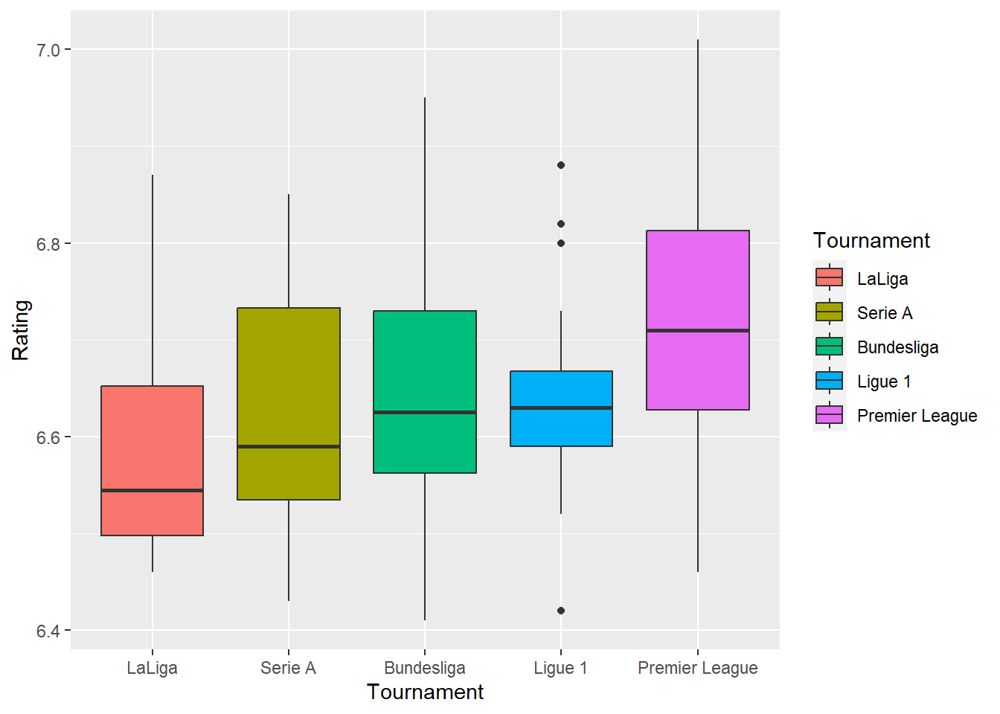
# Relationship between rating and other variables that has significant correlation
plot(data$Rating,data$Goals,xlab="Rating",ylab="Goals",main = "Rating vs Goals Linear Model")
abline(lm(Goals ~ Rating, data = data),col="red")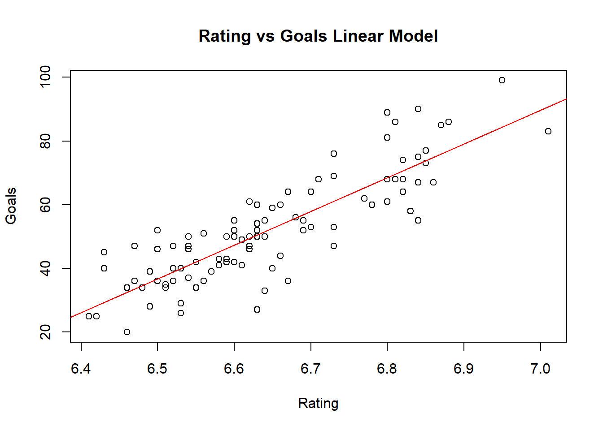
res<-lm(Goals ~ Rating, data = data)
summary(res)
Call:
lm(formula = Goals ~ Rating, data = data)
Residuals:
Min 1Q Median 3Q Max
-23.474 -4.882 -0.627 6.095 20.498
Coefficients:
Estimate Std. Error t value Pr(>|t|)
(Intercept) -652.633 44.183 -14.77 <2e-16 ***
Rating 106.049 6.647 15.96 <2e-16 ***
---
Signif. codes: 0 '***' 0.001 '**' 0.01 '*' 0.05 '.' 0.1 ' ' 1
Residual standard error: 8.651 on 96 degrees of freedom
Multiple R-squared: 0.7262, Adjusted R-squared: 0.7233
F-statistic: 254.6 on 1 and 96 DF, p-value: < 2.2e-16plot(data$Rating,data$Shots.pg, xlab="Rating",ylab="Shots.pg",main = "Rating vs Shots Linear Model")
abline(lm(Shots.pg ~ Rating, data = data), col = "purple")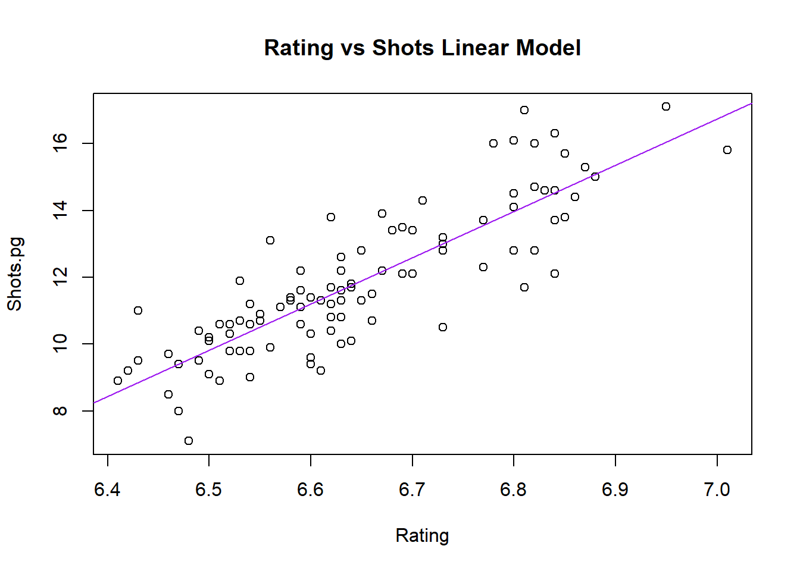
res3<-lm(Shots.pg ~ Rating, data = data)
summary(res3)
Call:
lm(formula = Shots.pg ~ Rating, data = data)
Residuals:
Min 1Q Median 3Q Max
-2.51255 -0.71796 0.04897 0.52414 2.87961
Coefficients:
Estimate Std. Error t value Pr(>|t|)
(Intercept) -80.1841 5.7913 -13.85 <2e-16 ***
Rating 13.8479 0.8712 15.89 <2e-16 ***
---
Signif. codes: 0 '***' 0.001 '**' 0.01 '*' 0.05 '.' 0.1 ' ' 1
Residual standard error: 1.134 on 96 degrees of freedom
Multiple R-squared: 0.7247, Adjusted R-squared: 0.7218
F-statistic: 252.7 on 1 and 96 DF, p-value: < 2.2e-16# Positive linear relationship between rating and both of these variables.
plot(data$Rating,data$Pass., xlab="Rating",ylab="Pass.",main = "Rating vs Pass Linear Model")
abline(lm(Pass. ~ Rating, data = data), col = "green")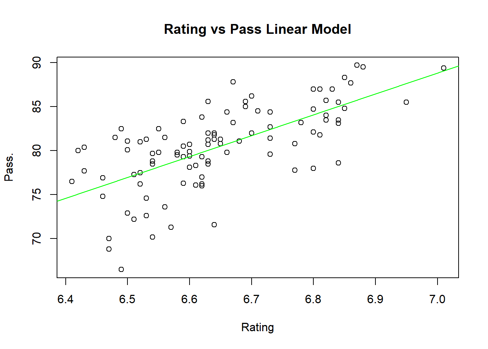
res4<-lm(Pass. ~ Rating, data = data)
summary(res4)
Call:
lm(formula = Pass. ~ Rating, data = data)
Residuals:
Min 1Q Median 3Q Max
-10.2372 -1.8466 0.5051 2.3386 6.7916
Coefficients:
Estimate Std. Error t value Pr(>|t|)
(Intercept) -77.263 17.907 -4.315 3.88e-05 ***
Rating 23.729 2.694 8.809 5.38e-14 ***
---
Signif. codes: 0 '***' 0.001 '**' 0.01 '*' 0.05 '.' 0.1 ' ' 1
Residual standard error: 3.506 on 96 degrees of freedom
Multiple R-squared: 0.447, Adjusted R-squared: 0.4412
F-statistic: 77.6 on 1 and 96 DF, p-value: 5.375e-14# Not as strong
plot(data$Pass., data$AerialsWon, xlab = "Pass.", ylab = "AerialsWon", main = "AerialsWon vs Pass Linear Model")
abline(lm(AerialsWon ~ Pass., data = data), col = "yellow")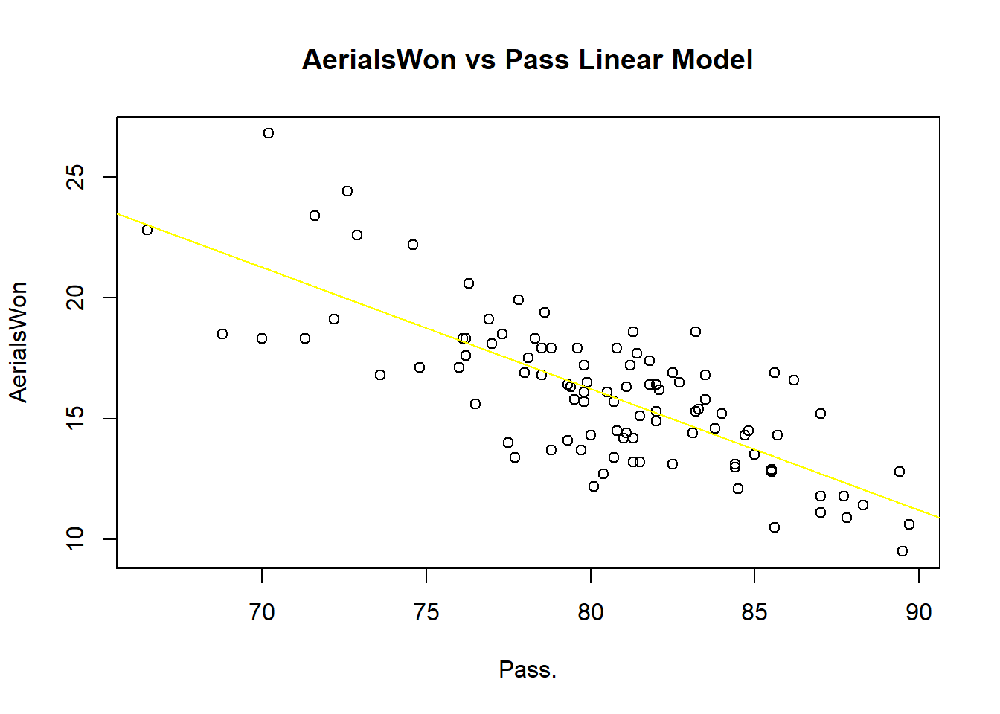
res2 <- lm(AerialsWon ~ Pass., data = data)
summary(res2)
Call:
lm(formula = AerialsWon ~ Pass., data = data)
Residuals:
Min 1Q Median 3Q Max
-3.9827 -1.3630 -0.1802 1.2080 5.6519
Coefficients:
Estimate Std. Error t value Pr(>|t|)
(Intercept) 56.39276 3.47829 16.21 <2e-16 ***
Pass. -0.50206 0.04317 -11.63 <2e-16 ***
---
Signif. codes: 0 '***' 0.001 '**' 0.01 '*' 0.05 '.' 0.1 ' ' 1
Residual standard error: 1.994 on 96 degrees of freedom
Multiple R-squared: 0.5849, Adjusted R-squared: 0.5806
F-statistic: 135.3 on 1 and 96 DF, p-value: < 2.2e-16# Negative linear relationship# Rating vs Goal comparison among tournaments
plot(data$Rating,data$Goals,xlab="Rating",ylab="Goals",main = "Rating vs Goal Linear Models")
abline(lm(Goals ~ Rating, data = subset(data, Tournament == "Premier League")), col = "red")
abline(lm(Goals ~ Rating, data = subset(data, Tournament == "Serie A")), col = "blue")
abline(lm(Goals ~ Rating, data = subset(data, Tournament == "LaLiga")), col = "orange")
abline(lm(Goals ~ Rating, data = subset(data, Tournament == "Bundesliga")), col = "pink")
abline(lm(Goals ~ Rating, data = subset(data, Tournament == "Ligue 1")), col = "purple")
legend("topleft",legend=c("Premier League","Serie A","LaLiga","Bundesliga","Ligue 1"),pch=16,cex = 0.9, col=c("blue","red","orange","pink","purple"))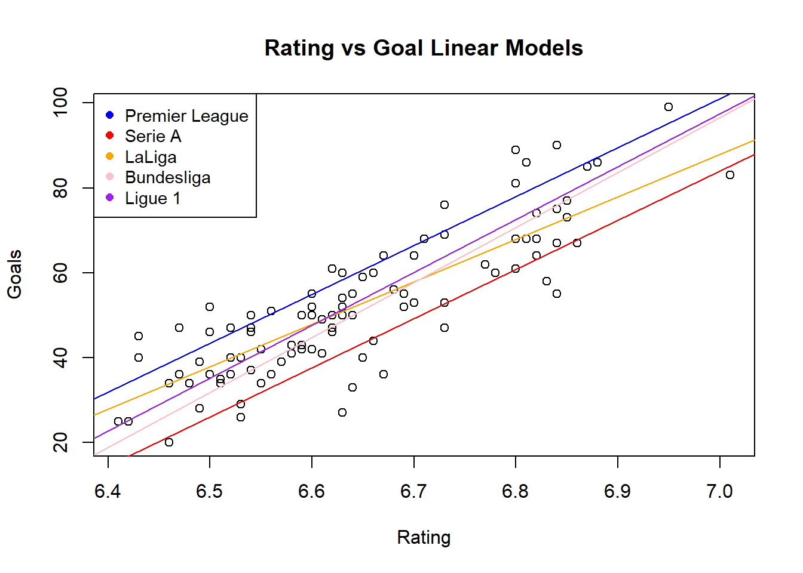
# Rating vs Shots comparison among tournaments
plot(data$Rating,data$Shots.pg,xlab="Rating",ylab="Shots.pg",main = "Rating ve Shots.pg Linear Models")
abline(lm(Shots.pg ~ Rating, data = subset(data, Tournament == "Premier League")), col = "red")
abline(lm(Shots.pg ~ Rating, data = subset(data, Tournament == "Serie A")), col = "blue")
abline(lm(Shots.pg ~ Rating, data = subset(data, Tournament == "LaLiga")), col = "orange")
abline(lm(Shots.pg ~ Rating, data = subset(data, Tournament == "Bundesliga")), col = "pink")
abline(lm(Shots.pg ~ Rating, data = subset(data, Tournament == "Ligue 1")), col = "purple")
legend("topleft",legend=c("Premier League","Serie A","LaLiga","Bundesliga","Ligue 1"),pch=16,cex = 0.9, col=c("blue","red","orange","pink","purple"))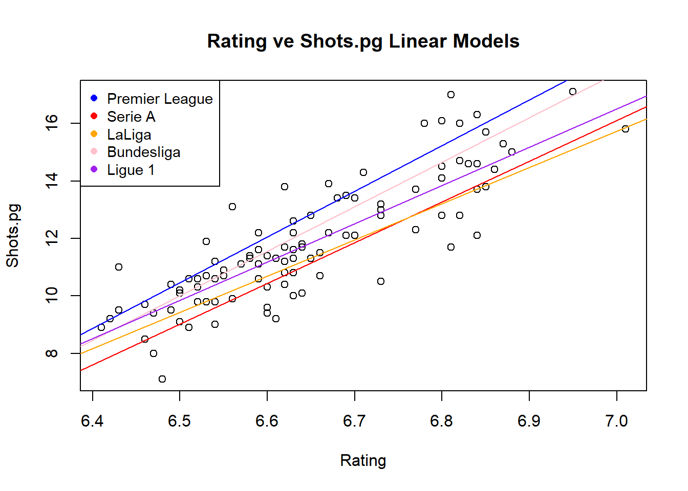
# First chart consists of the teams whose ratings are smaller than the average rating
# in their specified tournament. Second chart consists of the teams whose ratings are greater than the average.
up_group <- dplyr::filter(data,Rating>6.646)
low_group <-dplyr::filter(data,Rating<6.646)
mytable <- table(up_group$Tournament)
lbls <- paste(names(mytable), "\n", mytable, sep="")
pie(mytable, labels = lbls,
main="Pie Chart of teams with rating greater than the mean ",col=c("blue","red","orange","pink","purple"))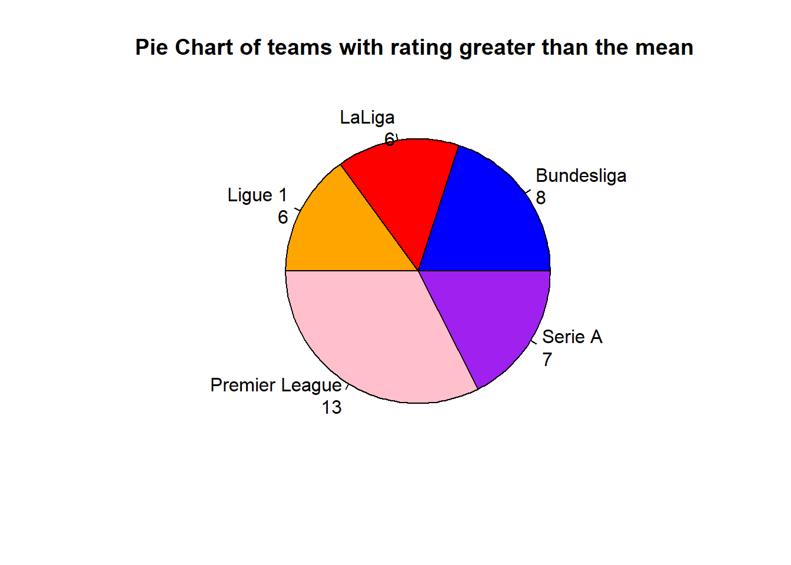
mytable <- table(low_group$Tournament)
lbls <- paste(names(mytable), "\n", mytable, sep="")
pie(mytable, labels = lbls,
main="Pie Chart of teams with rating smaller than yhe mean ",col=c("blue","red","orange","pink","purple"))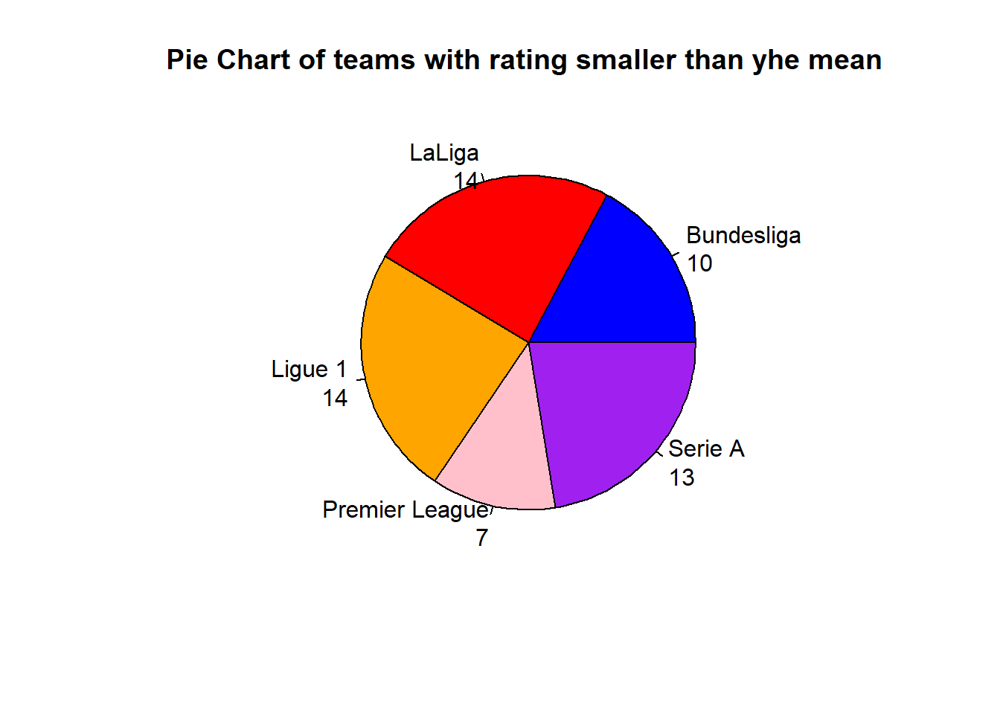
boxplot(up_group$Goals,low_group$Goals,ylab="Goals",main = "Up and Low Group Goals",col=c("blue","red"))
legend("topleft", legend=c("Up group", "Low group"),pch=16,cex = 0.9,col=c("blue", "red"), text.font=4)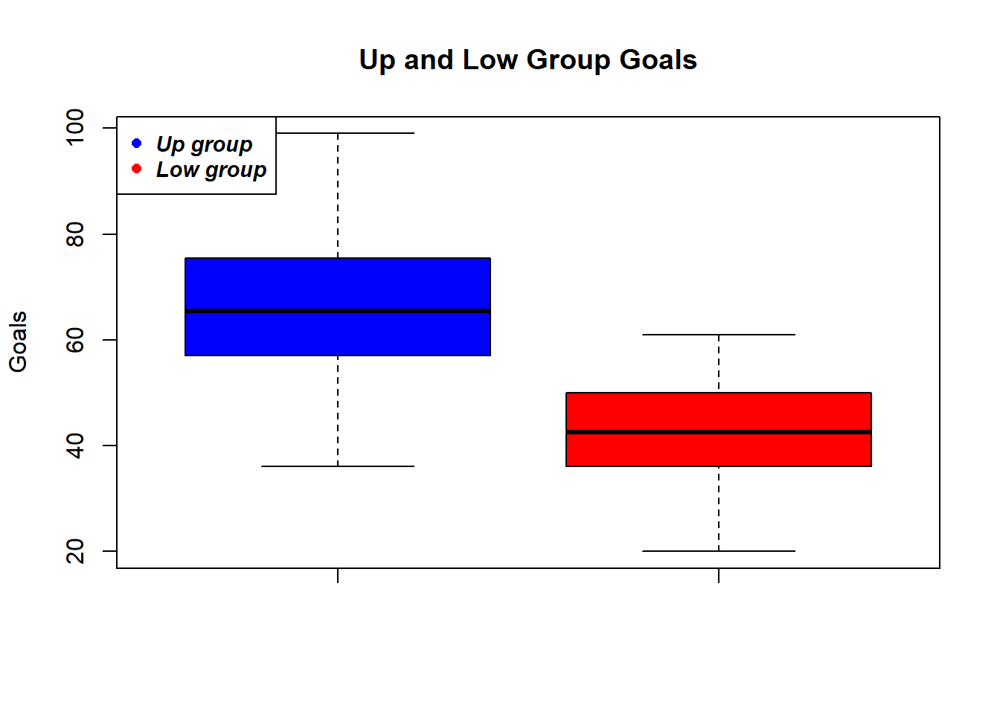
#Distributions of some variables faceted by Tournaments
data %>% ggplot(aes(x=Rating, color=Tournament)) + geom_density() + facet_wrap(~Tournament)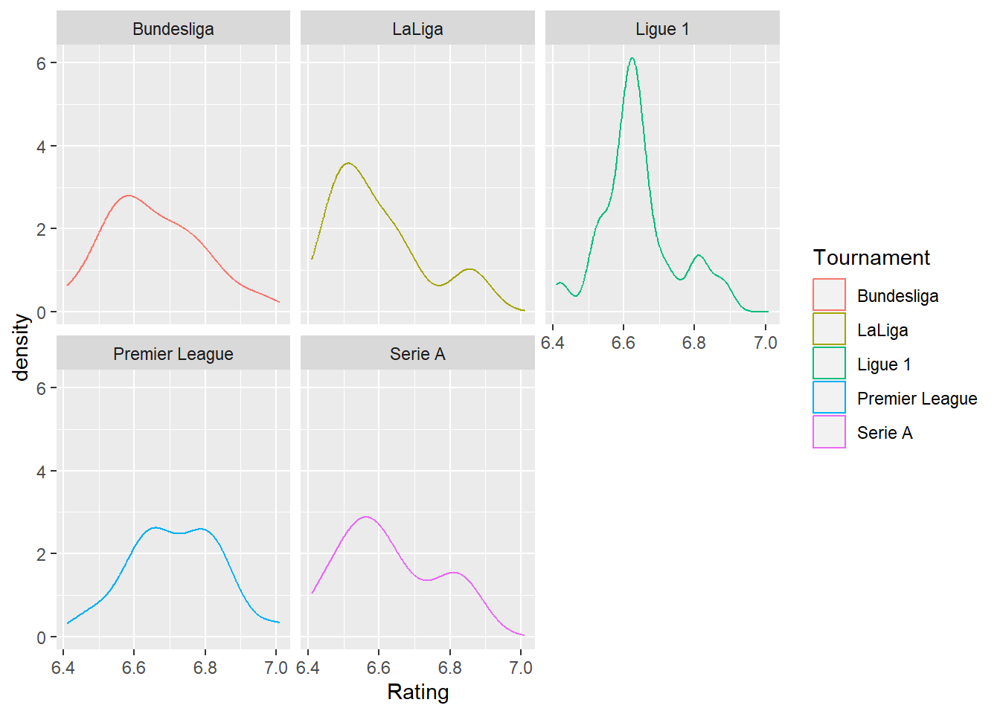
data %>% ggplot(aes(x=Goals, color=Tournament)) + geom_density() + facet_wrap(~Tournament)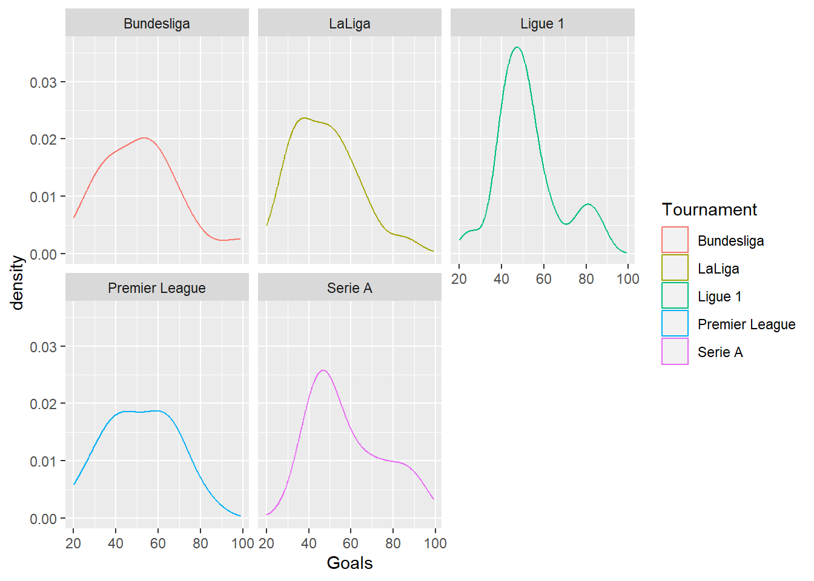
data %>% ggplot(aes(x=Shots.pg, color=Tournament)) + geom_density() + facet_wrap(~Tournament)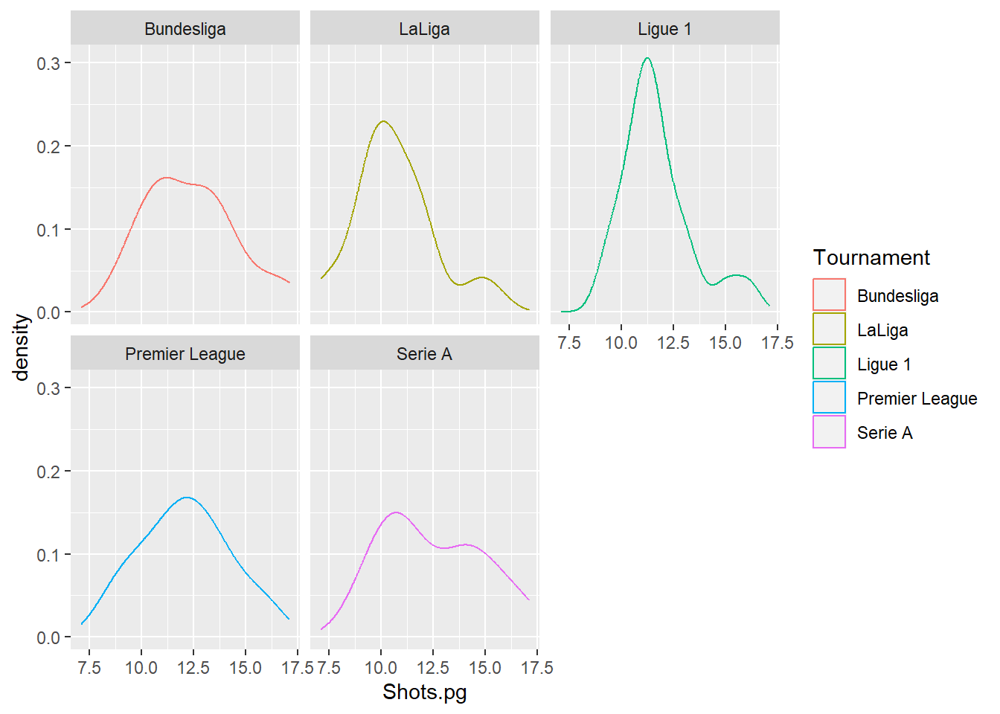
data %>% ggplot(aes(x=Possession., color=Tournament)) + geom_density() + facet_wrap(~Tournament)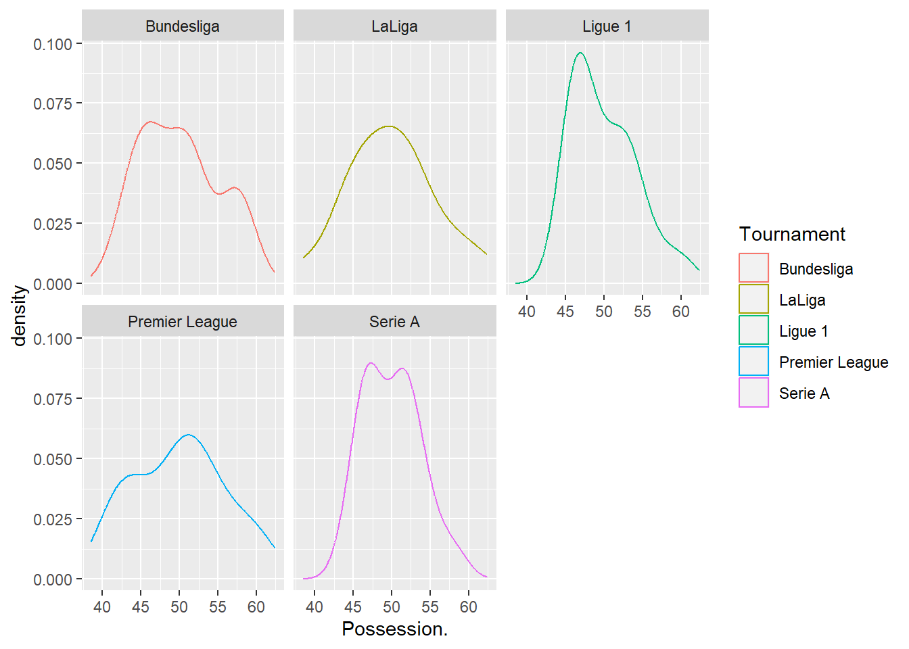
data %>% ggplot(aes(x=AerialsWon, color=Tournament)) + geom_density() + facet_wrap(~Tournament)